Objectif
Le Belter mesure la tension d'une courroie par l'enfoncement d'une tige rappelée par un ressort de traction. Ce rapport établit, à partir de mesures, le modèle de mesure de référence du Belter : la relation entre la valeur affichée A et la force F appliquée. Il présente les mesures, le modèle théorique du ressort, les points résolus et le point qui reste ouvert, puis le modèle de référence à utiliser pour la suite (§5).
Modèle de mesure de référence
- F = 0,337 + 0,1226·A (F en N, A valeur affichée en mm), soit m = 34,4 + 12,49·A en grammes. Belter vertical, embout vers le bas, précision ±3 g, valable de 1 à 13 mm.
- Ressort : k = 0,1235 N/mm, précharge du ressort au zéro Fr0 = 0,41 N (42 g), inox, 27 spires jointives de 0,30 mm.
- L'afficheur lit directement le déplacement de la tige en mm (gain 1,005). Frottements ≈ 0,3 g, zéro stable.
- Tension de courroie (GT2 9 mm) : T = (0,406 + 0,1226·A)·59,75 / (4·(7,24 − A)), validée entre 6 et 29 N à ±6 % près avec 6 masses (§6).
Notations
| Symbole | Signification | Unité |
|---|---|---|
| m | Masse suspendue | g ou kg |
| g | Accélération de la pesanteur (9,81) | m/s² |
| F | Force appliquée sur la tige | N |
| x, x0 | Longueur apparente de la tige (x0 : au zéro, sans masse) | mm |
| d | Déplacement de la tige depuis le zéro | mm |
| A | Valeur affichée par le Belter | mm |
| k | Raideur du ressort | N/mm |
| F0 | Force extérieure nécessaire pour décoller la partie mobile de la butée | N |
| Fr0 | Force exercée par le ressort au zéro (précharge du ressort) | N |
| Fi | Tension initiale d'enroulement (spires jointives) | N |
| mp | Masse de la partie mobile (7 g) | g |
| L0, Lp | Longueur libre du ressort / longueur montée au zéro | mm |
| dfil, De, D | Diamètre du fil / extérieur / moyen de l'enroulement | mm |
| n | Nombre de spires actives | – |
| G | Module de cisaillement du matériau | N/mm² |
| τ, Kw, C | Contrainte de cisaillement / coefficient de Wahl / indice du ressort | MPa / – / – |
Pour éviter la confusion avec le déplacement d, le diamètre du fil est noté dfil dans les formules littérales.
1. Partie pratique : mesures
1.1 Principe de fonctionnement et bilan des forces
Le ressort est accroché d'un côté au châssis, de l'autre à la partie mobile qui porte la tige. Au zéro de l'afficheur, le ressort est déjà tendu et plaque la partie mobile contre une butée du châssis. Les masses d'étalonnage sont suspendues au bout arrondi de la partie mobile, Belter vertical, embout vers le bas.

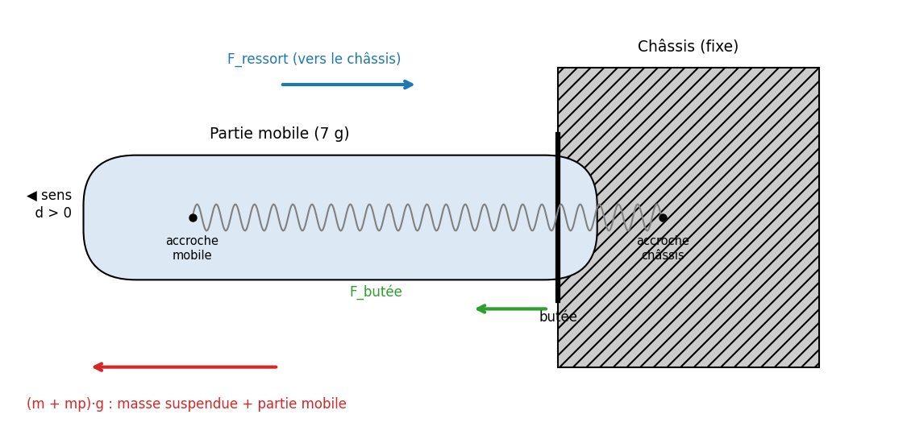
À vide (affichage 0). La partie mobile est à l'équilibre (ΣF = 0) : toute la précharge du ressort est reprise par la butée.
Fr0 = F_butée + mp · g
Avec une masse m, tant que l'affichage reste à 0. La masse soulage la butée sans rien déplacer :
F_butée = Fr0 − (m + mp) · g
Décollage. La partie mobile quitte la butée quand F_butée s'annule :
(m + mp) · g = Fr0
Au-delà, déplacement d. Il n'y a plus de contact avec la butée, et le ressort s'allonge de d :
(m + mp) · g = Fr0 + k · d
On en déduit la force extérieure appliquée par la masse, F = m·g :
F = (Fr0 − mp · g) + k · d = F0 + k · d avec F0 = Fr0 − mp · g
Les essais mesurent donc directement k et F0. La précharge du ressort s'obtient en ajoutant le poids de la partie mobile.
1.2 Relevés dimensionnels et pesée
Relevés au pied à coulisse numérique (résolution 0,01 mm) et à la balance (résolution 1 g). Les longueurs L0 et Lp sont mesurées entre les points d'accroche du ressort.
| Grandeur | Valeur retenue | Remarque |
|---|---|---|
| Nombre de spires n | 27 | Compté |
| Diamètre du fil dfil | 0,30 mm | Mesure directe ; confirmé par corps / n (§4.1) |
| Diamètre extérieur De | 3,00 mm | Mesuré en 3 endroits (3,00 / 3,00 / 3,00) |
| Diamètre moyen D = De − dfil | 2,70 mm | Calculé |
| Longueur du corps de spires | 8,31 mm | 27 spires jointives |
| Spires jointives | Oui | Pas = 8,31 / 27 = 0,308 mm ≈ dfil |
| Longueur libre L0 | 15,00 mm | Ressort démonté, sans contrainte |
| Longueur montée au zéro Lp | 21,32 mm | Ressort dans le Belter, afficheur à 0 |
| Masse de la partie mobile mp | 7 g | Pesée (partie mobile + tige, sans ressort) |
| Matériau | Inox AISI 302 | G = 69 000 N/mm² |
| Plage d'utilisation de l'afficheur | 4 à 8 mm | Déplacement typique en service |
Diamètre moyen de l'enroulement :
D = De − dfil = 3,00 − 0,30 = 2,70 mm
Allongement imposé au ressort au montage (zéro de l'afficheur) :
ΔLm = Lp − L0 = 21,32 − 15,00 = 6,32 mm
Poids de la partie mobile :
mp · g = 0,007 × 9,81 = 0,069 N
1.3 Campagne 1 : déplacement de la tige (16 masses)
Protocole : masses suspendues directement, de 52 g à 200 g. La grandeur relevée est la longueur apparente x de la tige (partie visible hors du boîtier), avec trois lectures par masse : à la règle de 52 à 120 g, au pied à coulisse de 130 à 200 g. Au zéro (ressort précontraint, sans masse suspendue), la longueur apparente vaut x0 = 27,0 mm (2,7 cm). Sous charge, la tige rentre dans le boîtier et le déplacement vaut d = x0 − x.
Transcription. Les valeurs ci‑dessous sont retranscrites depuis la feuille de mesures manuscrite. Les lectures marquées d'un astérisque (*) sont peu lisibles sur la feuille et restent à confirmer. Leur influence sur la pente est faible, car la régression porte sur 48 points.
| Masse | F (N) | Lectures x (mm) | Moyenne x | d moyen | Instrument |
|---|---|---|---|---|---|
| 52 g | 0,510 | 26,0 / 25,5* / 25,9* | 25,79 | 1,21 | Règle |
| 61 g | 0,598 | 24,9 / 24,5* / 25,0 | 24,80 | 2,20 | Règle |
| 72 g | 0,706 | 24,0* / 23,0* / 25,0* | 24,00 | 3,00 | Règle |
| 80 g | 0,785 | 23,1 / 23,1 / 22,5 | 22,90 | 4,10 | Règle |
| 90 g | 0,883 | 22,3 / 22,0 / 22,7 | 22,33 | 4,67 | Règle |
| 100 g | 0,981 | 21,5 / 21,7 / 21,8 | 21,67 | 5,33 | Règle |
| 110 g | 1,079 | 21,0 / 21,0 / 21,1 | 21,03 | 5,97 | Règle |
| 120 g | 1,177 | 20,0 / 20,0 / 19,5 | 19,83 | 7,17 | Règle |
| 130 g | 1,275 | 19,0 / 19,5 / 19,2 | 19,23 | 7,77 | Pied à coulisse |
| 140 g | 1,373 | 18,2 / 17,9* / 17,2* | 17,77 | 9,23 | Pied à coulisse |
| 150 g | 1,472 | 17,2 / 18,0 / 17,1 | 17,43 | 9,57 | Pied à coulisse |
| 161 g | 1,579 | 16,1 / 16,8 / 16,5 | 16,47 | 10,53 | Pied à coulisse |
| 170 g | 1,668 | 16,0 / 15,9 / 15,7 | 15,87 | 11,13 | Pied à coulisse |
| 181 g | 1,776 | 14,9* / 15,1 / 14,7 | 14,90 | 12,10 | Pied à coulisse |
| 191 g | 1,874 | 14,6 / 14,2 / 14,1 | 14,30 | 12,70 | Pied à coulisse |
| 200 g | 1,962 | 14,0 / 14,0 / 13,8 | 13,93 | 13,07 | Pied à coulisse |
1.4 Exploitation de la campagne 1
La force de chaque essai se calcule par F = m·g, et le déplacement par d = x0 − x. La grandeur mesurée étant la longueur x (variable entachée d'erreur de lecture), on ajuste x en fonction de F par une droite des moindres carrés sur les N = 48 lectures :
x = a + b · F
Les coefficients s'obtiennent à partir des moyennes Fmoy et xmoy :
b = Σ(Fi − Fmoy)(xi − xmoy) / Σ(Fi − Fmoy)² a = xmoy − b · Fmoy
Application numérique : Fmoy = 1,2312 N, xmoy = 19,516 mm, Σ(Fi − Fmoy)² = 9,720 N², Σ(Fi − Fmoy)(xi − xmoy) = −80,57 N·mm.
b = −80,57 / 9,720 = −8,289 mm/N a = 19,516 + 8,289 × 1,2312 = 29,72 mm
x = 29,72 − 8,289 · F
La qualité de l'ajustement est mesurée par le coefficient de détermination, où xi,calc est la valeur prédite par la droite :
R² = 1 − Σ(xi − xi,calc)² / Σ(xi − xmoy)²
R² = 1 − 7,407 / 675,28 = 0,989

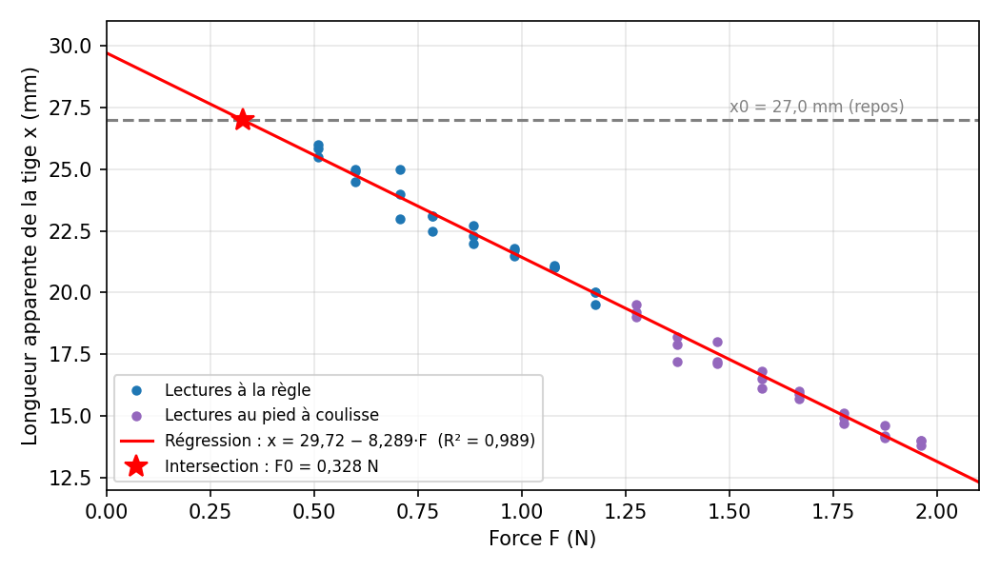
On en déduit les deux paramètres du ressort monté. En remplaçant x par x0 − d dans l'équation de la droite, on retrouve la forme F = F0 + k·d, avec :
k = −1 / b F0 = (a − x0) / (−b)
Raideur :
k = 1 / 8,289 = 0,1206 N/mm
L'incertitude sur la pente se calcule à partir de l'écart-type des résidus s, puis de l'écart-type de la pente sb :
s = √[ Σ(xi − xi,calc)² / (N − 2) ] sb = s / √Σ(Fi − Fmoy)²
s = √(7,407 / 46) = 0,401 mm sb = 0,401 / √9,720 = 0,129 mm/N
Intervalle de confiance à 95 % sur la pente (t de Student à 46 degrés de liberté, t = 2,013) :
b = −8,289 ± 2,013 × 0,129 = −8,289 ± 0,259 mm/N
Soit k compris entre 1/8,548 = 0,117 et 1/8,030 = 0,125 N/mm, c'est-à-dire ±3 %.
Précharge au zéro : la droite coupe la position de repos x0 = 27,0 mm pour
F0 = (29,72 − 27,0) / 8,289 = 0,328 N
Converti en masse équivalente par m = F0 / g = 0,328 / 9,81 = 33 g. En dessous de cette force, la tige ne bouge pas.

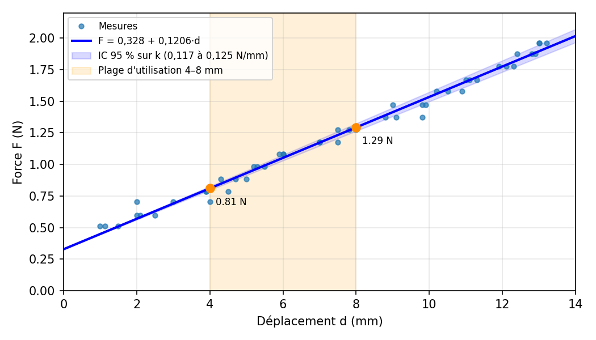
Résultat de la campagne 1 : F(d) = 0,33 + 0,121·d (F en N, d en mm).
Dispersion. L'écart‑type des résidus est de 0,40 mm, cohérent avec la lecture à la règle (graduation 1 mm) et avec un léger frottement de la tige. Aucune courbure systématique n'apparaît : le comportement est linéaire sur toute la plage testée.

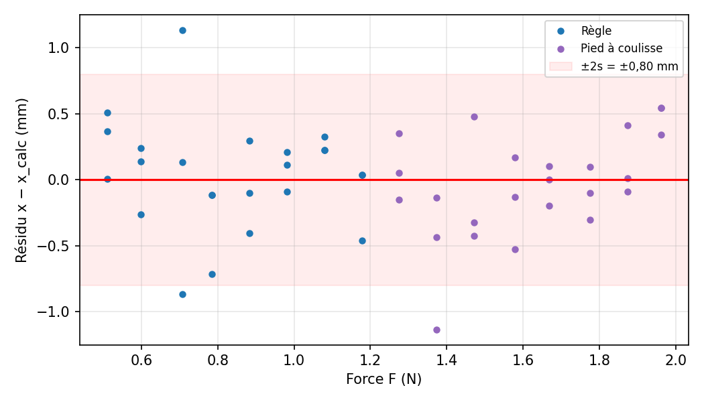
Contrôle de cohérence. Sans masse, la droite de régression prévoit une longueur apparente de 29,7 mm, alors que la tige mesure 27,0 mm au zéro. Ces 2,7 mm correspondent à l'enfoncement que le ressort « économise » tant que la force appliquée reste inférieure à la précharge : c'est la confirmation directe de la précharge de 0,33 N.
Point de vigilance. Une régression séparée par instrument donne 0,118 N/mm à la règle et 0,133 N/mm au pied à coulisse. Cet écart peut venir d'un changement de point de mesure entre les deux instruments ou d'un léger raidissement aux fortes charges. Refaire quelques masses de 130 à 200 g à la règle, ou de 52 à 120 g au pied, permettrait de trancher.
1.5 Campagne 2 : tige et afficheur, en montée et en descente
Protocole : même montage, mêmes masses suspendues à la tige. Pour chaque palier, trois lectures de la longueur apparente de la tige, toutes au pied à coulisse, et trois lectures de la valeur affichée par le Belter, relevées simultanément. Les masses sont ajoutées de 54 g à 200 g (15 paliers de montée), puis retirées de 191 g à 111 g (9 paliers de descente).
Contrôle du zéro : x0 = 27,0 mm et affichage = 0 avant comme après les essais. Aucune dérive n'a été constatée. L'afficheur est gradué en millimètres.
| Sens | Masse | F (N) | Tige x (mm) | x moy. | d (mm) | Affichage A (mm) | A moy. |
|---|---|---|---|---|---|---|---|
| Montée | 54 g | 0,530 | 25,5 / 25,5 / 25,5 | 25,50 | 1,50 | 1,41 / 1,40 / 1,50 | 1,44 |
| Montée | 61 g | 0,598 | 25,0 / 25,0 / 25,0 | 25,00 | 2,00 | 2,04 / 2,08 / 2,04 | 2,05 |
| Montée | 72 g | 0,706 | 24,1 / 24,0 / 24,0 | 24,03 | 2,97 | 3,15 / 3,11 / 3,15 | 3,14 |
| Montée | 82 g | 0,804 | 23,0 / 23,1 / 23,0 | 23,03 | 3,97 | 3,90 / 3,91 / 3,91 | 3,91 |
| Montée | 95 g | 0,932 | 22,1 / 22,1 / 22,2 | 22,13 | 4,87 | 4,78 / 4,79 / 4,80 | 4,79 |
| Montée | 104 g | 1,020 | 21,5 / 21,8 / 21,5 | 21,60 | 5,40 | 5,54 / 5,55 / 5,47 | 5,52 |
| Montée | 111 g | 1,089 | 21,0 / 21,0 / 21,0 | 21,00 | 6,00 | 6,29 / 6,28 / 6,25 | 6,27 |
| Montée | 124 g | 1,216 | 20,0 / 20,0 / 20,1 | 20,03 | 6,97 | 7,32 / 7,30 / 7,31 | 7,31 |
| Montée | 132 g | 1,295 | 19,0 / 19,0 / 19,0 | 19,00 | 8,00 | 8,10 / 8,18 / 8,17 | 8,15 |
| Montée | 149 g | 1,462 | 18,0 / 18,0 / 18,2 | 18,07 | 8,93 | 9,13 / 9,15 / 9,17 | 9,15 |
| Montée | 162 g | 1,589 | 17,0 / 17,0 / 17,0 | 17,00 | 10,00 | 10,06 / 10,04 / 10,08 | 10,06 |
| Montée | 171 g | 1,678 | 16,3 / 16,0 / 16,2 | 16,17 | 10,83 | 10,70 / 10,82 / 10,84 | 10,79 |
| Montée | 183 g | 1,795 | 15,5 / 15,1 / 15,2 | 15,27 | 11,73 | 11,93 / 11,91 / 12,01 | 11,95 |
| Montée | 193 g | 1,893 | 14,5 / 14,2 / 14,3 | 14,33 | 12,67 | 12,75 / 12,70 / 12,71 | 12,72 |
| Montée | 200 g | 1,962 | 14,0 / 14,0 / 14,0 | 14,00 | 13,00 | 13,14 / 13,34 / 13,40 | 13,29 |
| Descente | 191 g | 1,874 | 14,5 / 14,5 / 14,8 | 14,60 | 12,40 | 12,45 / 12,57 / 12,41 | 12,48 |
| Descente | 181 g | 1,776 | 15,2 / 15,2 / 15,0 | 15,13 | 11,87 | 11,68 / 11,87 / 11,80 | 11,78 |
| Descente | 171 g | 1,678 | 16,1 / 16,0 / 16,3 | 16,13 | 10,87 | 10,88 / 10,75 / 10,80 | 10,81 |
| Descente | 160 g | 1,570 | 17,0 / 17,1 / 17,0 | 17,03 | 9,97 | 10,00 / 10,04 / 10,05 | 10,03 |
| Descente | 151 g | 1,481 | 17,9 / 18,0 / 18,0 | 17,97 | 9,03 | 9,30 / 9,30 / 9,30 | 9,30 |
| Descente | 142 g | 1,393 | 18,5 / 18,5 / 18,5 | 18,50 | 8,50 | 8,56 / 8,57 / 8,60 | 8,58 |
| Descente | 129 g | 1,265 | 20,0 / 19,5 / 19,5 | 19,67 | 7,33 | 7,68 / 7,72 / 7,70 | 7,70 |
| Descente | 120 g | 1,177 | 20,1 / 20,0 / 20,1 | 20,07 | 6,93 | 6,85 / 6,86 / 6,84 | 6,85 |
| Descente | 111 g | 1,089 | 21,2 / 21,1 / 21,0 | 21,10 | 5,90 | 5,76 / 6,02 / 6,07 | 5,95 |
1.6 Exploitation de la campagne 2 : ressort
Même méthode qu'au §1.4 : régression des N = 72 lectures de tige en fonction de la force, x = a + b·F, avec b = Σ(Fi − Fmoy)(xi − xmoy) / Σ(Fi − Fmoy)² et a = xmoy − b·Fmoy.
Application numérique : Fmoy = 1,3280 N, xmoy = 19,015 mm, Σ(Fi − Fmoy)² = 12,272 N², Σ(Fi − Fmoy)(xi − xmoy) = −99,41 N·mm.
b = −99,41 / 12,272 = −8,100 mm/N a = 19,015 + 8,100 × 1,3280 = 29,77 mm
R² = 1 − Σ(xi − xi,calc)² / Σ(xi − xmoy)² = 1 − 1,837 / 807,07 = 0,9977

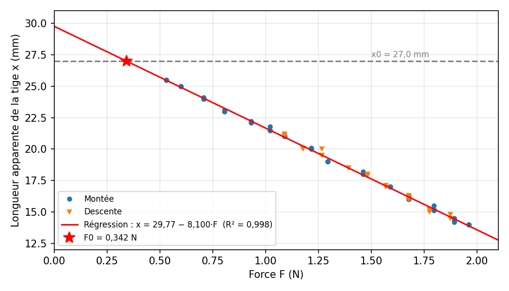
Raideur :
k = −1 / b = 1 / 8,100 = 0,1235 N/mm
s = √(1,837 / 70) = 0,162 mm sb = 0,162 / √12,272 = 0,0462 mm/N
Intervalle de confiance à 95 % (t de Student à 70 degrés de liberté, t = 1,994) :
b = −8,100 ± 1,994 × 0,0462 = −8,100 ± 0,092 mm/N
Soit k compris entre 1/8,192 = 0,1221 et 1/8,008 = 0,1249 N/mm, c'est-à-dire ±1,1 %. La précision est presque trois fois meilleure qu'en campagne 1, grâce au pied à coulisse sur toute la plage : l'écart-type des résidus passe de 0,40 à 0,16 mm.
Précharge :
F0 = (a − x0) / (−b) = (29,77 − 27,0) / 8,100 = 0,342 N soit m = F0 / g = 35 g
D'après le bilan des forces (§1.1), la précharge exercée par le ressort lui-même vaut :
Fr0 = F0 + mp · g = 0,342 + 0,069 = 0,411 N soit 42 g
Hystérésis et frottements. Les masses de descente ne sont pas identiques à celles de montée, donc on compare chaque point de descente à la droite de montée. À force égale, la descente se situe en moyenne à 0,05 mm de la montée. Le frottement s'oppose au mouvement dans les deux sens, donc l'écart montée/descente vaut deux fois la force de frottement :
2 · Ff = k · Δd donc Ff = 0,1235 × 0,05 / 2 ≈ 0,003 N ≈ 0,3 g
Le frottement entre partie mobile et châssis est donc négligeable devant la précision de la mesure (±3 g).
1.7 Reproductibilité entre les deux campagnes
| Paramètre | Campagne 1 | Campagne 2 | Écart |
|---|---|---|---|
| Raideur k | 0,1206 N/mm (±3 %) | 0,1235 N/mm (±1,1 %) | +2,4 % |
| Précharge F0 | 0,328 N | 0,342 N | +0,014 N (1,4 g) |
| R² | 0,989 | 0,9977 | |
| Écart-type des résidus | 0,40 mm | 0,16 mm |
Les intervalles de confiance se recouvrent (0,117 à 0,125 et 0,122 à 0,125 N/mm) : les deux campagnes sont cohérentes et le ressort est caractérisé de façon reproductible. La campagne 2, plus précise, est retenue pour la suite. Elle tranche aussi la question soulevée au §1.4 : mesurée entièrement au pied à coulisse, la raideur (0,1235) se situe entre les valeurs « règle » (0,118) et « pied » (0,133) de la campagne 1, sans courbure dans les résidus. L'écart venait donc de la lecture, pas d'une non-linéarité du ressort.

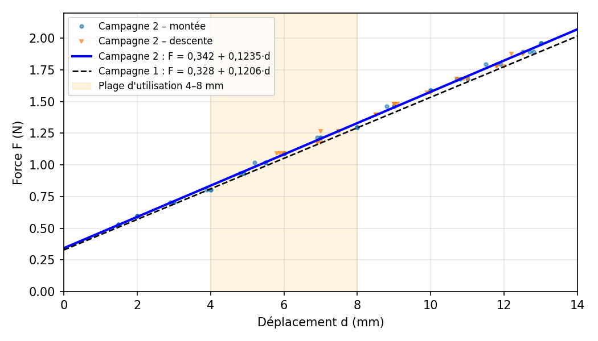
1.8 Étalonnage de l'afficheur
a) Affichage et déplacement réel de la tige. On régresse la valeur affichée A en fonction du déplacement d mesuré au pied à coulisse :
A = a' + b' · d
A = 0,061 + 1,005 · d R² = 0,998
Le gain vaut 1,005, soit une erreur d'échelle de 0,5 %, et le décalage 0,06 mm. L'afficheur indique donc directement le déplacement de la tige en millimètres. L'écart moyen A − d est de 0,10 mm (écart-type 0,14 mm), à la limite de lecture de la tige. Les trois lectures de l'afficheur pour une même masse varient en moyenne de 0,04 mm, contre 0,08 mm pour la tige : l'afficheur est plus répétable que la mesure manuelle.

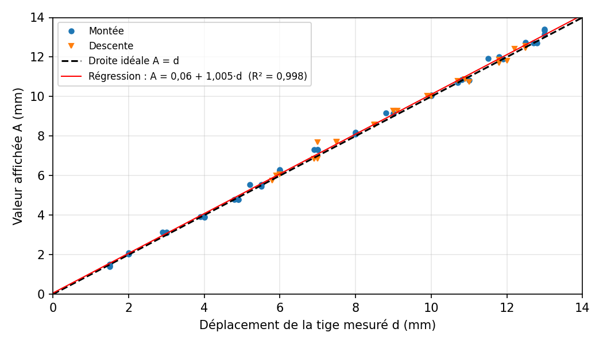
b) Loi d'étalonnage affichage → force. Comme la valeur affichée est ce que l'on lit en pratique, on exprime directement la force en fonction de A. On utilise la régression F = a + b·A sur les 72 lectures :
b = Σ(Ai − Amoy)(Fi − Fmoy) / Σ(Ai − Amoy)² a = Fmoy − b · Amoy
Application numérique : Amoy = 8,084 mm, Fmoy = 1,3280 N, Σ(Ai − Amoy)² = 815,74 mm², Σ(Ai − Amoy)(Fi − Fmoy) = 99,98 N·mm.
b = 99,98 / 815,74 = 0,1226 N/mm a = 1,3280 − 0,1226 × 8,084 = 0,337 N
F = 0,337 + 0,1226 · A R² = 1 − 0,0176 / 12,272 = 0,9986
Exprimée en masse équivalente (m = F / g) :
m (g) = 34,4 + 12,49 · A
sF = √[ Σ(Fi − Fi,calc)² / (N − 2) ] = √(0,0176 / 70) = 0,016 N ≈ 1,6 g
Une lecture du Belter donne donc la force à ±3 g près (±2 sF), sur toute la plage de 1 à 13 mm.

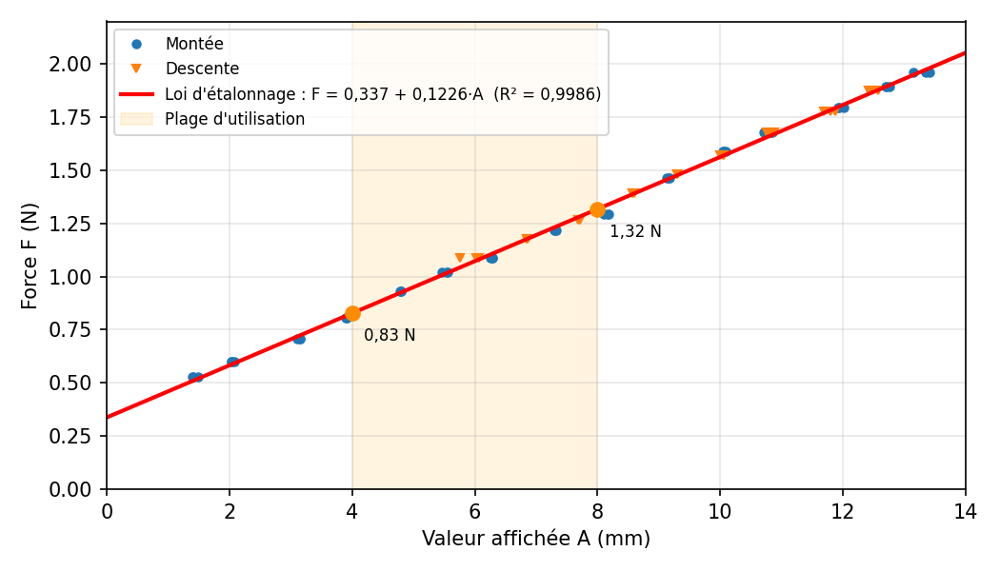

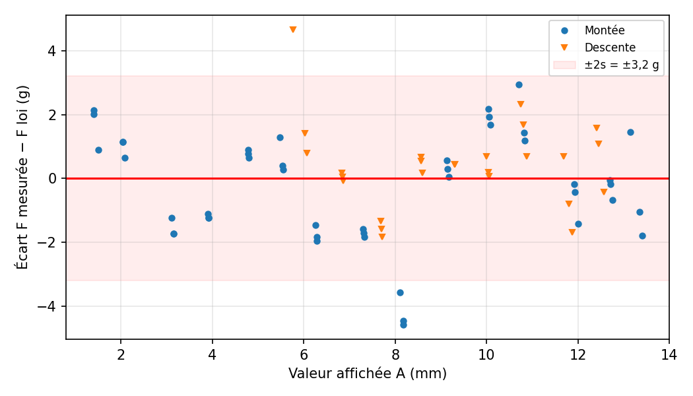
1.9 Relation retenue et effet de l'orientation
F = 0,337 + 0,1226 · A (F en N, A valeur affichée en mm, valable de 1 à 13 mm)
Table de conversion, obtenue par F = 0,337 + 0,1226·A et m = F / g :
| Affichage A | Force F | Équivalent masse | Situation |
|---|---|---|---|
| 0 mm | 0,34 N | 34 g | Seuil de décollage |
| 2 mm | 0,58 N | 59 g | |
| 4 mm | 0,83 N | 84 g | Début de plage d'utilisation |
| 6 mm | 1,07 N | 109 g | Milieu de plage |
| 8 mm | 1,32 N | 134 g | Fin de plage d'utilisation |
| 10 mm | 1,56 N | 159 g | |
| 12 mm | 1,81 N | 184 g | |
| 13 mm | 1,93 N | 197 g | Limite des essais |
Effet de l'orientation. L'étalonnage a été fait Belter vertical, embout vers le bas : le poids de la partie mobile (0,069 N) aidait alors la masse à tirer. La force que le ressort exerce réellement ne dépend pas de l'orientation :
F_ressort = F + mp · g = 0,406 + 0,1226 · A
La force extérieure F à fournir dépend donc de la position du Belter :
| Orientation | Loi d'étalonnage | Décalage |
|---|---|---|
| Vertical, embout vers le bas | F = 0,337 + 0,1226·A | Référence |
| Horizontal | F = 0,406 + 0,1226·A | +0,069 N (+7 g) |
| Vertical, embout vers le haut | F = 0,475 + 0,1226·A | +0,138 N (+14 g) |

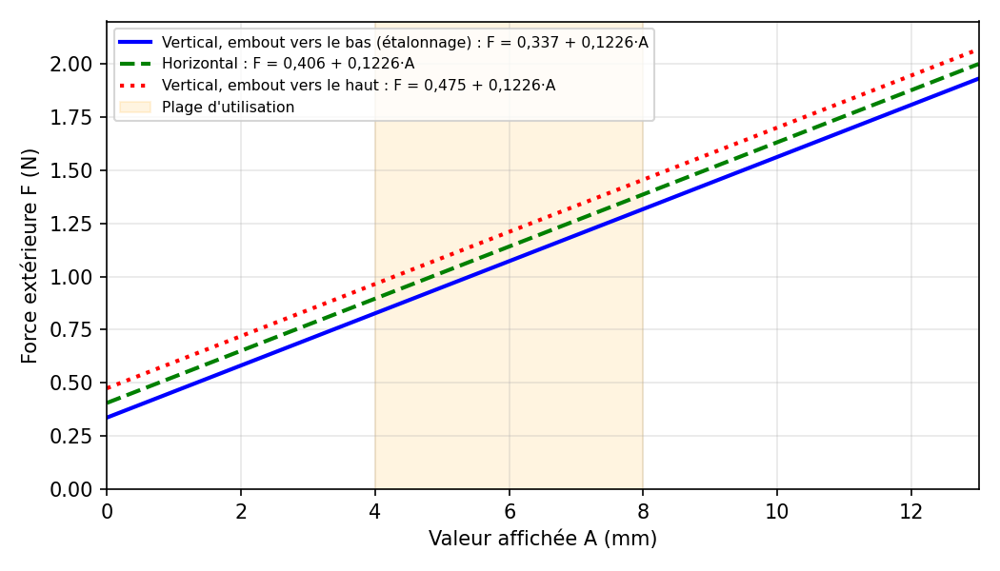
2. Partie théorique : modèle du ressort
2.1 Choix du modèle
Le ressort est modélisé comme un ressort de traction hélicoïdal à spires jointives en acier inoxydable AISI 302 (EN 10270‑3), défini par les cotes mesurées : dfil = 0,30 mm, De = 3,00 mm, n = 27 spires, L0 = 15,00 mm, G = 69 000 N/mm².
2.2 Raideur théorique
Lorsqu'on étire un ressort hélicoïdal, le fil travaille en torsion. En égalant l'énergie de torsion stockée dans le fil au travail de la force, on obtient la raideur :
k = G · dfil⁴ / (8 · n · D³)
Application numérique avec les cotes mesurées :
k = 69 000 × 0,30⁴ / (8 × 27 × 2,70³)
k = 558,9 / 4 251,5 = 0,1315 N/mm
Pour comparaison, avec un acier au carbone (G ≈ 81 500 N/mm²), la même géométrie donne k = 0,155 N/mm.
2.3 Précharge et relation F(d) prédites
Un ressort à spires jointives est fabriqué avec une tension initiale Fi ≥ 0 : il faut dépasser Fi avant que les spires ne se séparent. Au montage, le ressort est étiré de ΔLm = 6,32 mm. La précharge théorique vaut :
Fr0,th = Fi + k · (Lp − L0)
Fr0,th = Fi + 0,1315 × 6,32 = Fi + 0,831 N donc Fr0,th ≥ 0,83 N (85 g)
La force du ressort en fonction du déplacement de la tige est alors :
F_ressort(d) = Fr0,th + k · d = 0,831 + 0,1315 · d (avec Fi = 0)

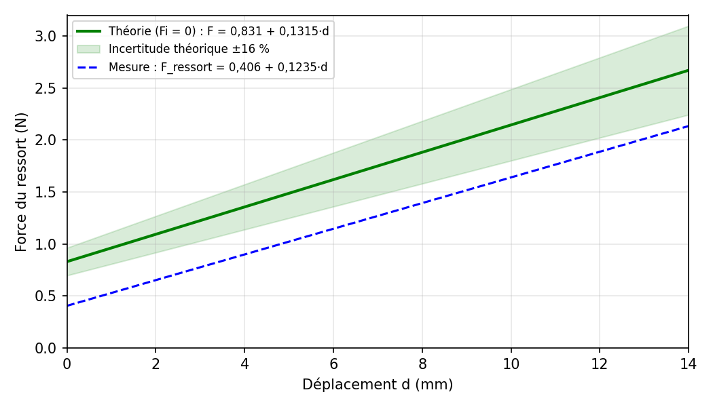
La raideur prédite est proche de la mesure (§2.4), mais la précharge prédite est deux fois plus grande que la précharge mesurée. Ce point est traité au §4.2.
2.4 Raideur pratique rapportée à la géométrie mesurée
On confronte ici la raideur mesurée, k_pratique = 0,1235 N/mm (campagne 2, §1.6), à la géométrie relevée au pied à coulisse.
a) Écart.
ε = (k_pratique − k_théorique) / k_théorique
ε = (0,1235 − 0,1315) / 0,1315 = −0,061 soit −6 %
b) Module de cisaillement apparent. On isole G dans la formule de raideur et on y injecte la raideur mesurée :
G_apparent = k_pratique · 8 · n · D³ / dfil⁴
G_apparent = 0,1235 × 8 × 27 × 2,70³ / 0,30⁴ = 0,1235 × 4 251,5 / 0,0081 ≈ 64 800 N/mm²
Cette valeur est proche de l'inox (69 000 N/mm², écart −6 %) et nettement éloignée de l'acier au carbone (81 500 N/mm²). Un ressort inox est donc le plus probable, avec des cotes réelles légèrement différentes des cotes relevées.
c) Géométrie équivalente (inox). On cherche la valeur de chaque paramètre, modifié seul, qui reproduit exactement k_pratique. Puisque k est proportionnel à dfil⁴, à 1/D³ et à 1/n :
dfil,eq = dfil · (k_pratique / k_théorique)^(1/4) = 0,300 × 0,939^(1/4) = 0,295 mm
Deq = D · (k_théorique / k_pratique)^(1/3) = 2,70 × 1,064^(1/3) = 2,76 mm donc De,eq = Deq + dfil = 3,06 mm
neq = n · k_théorique / k_pratique = 27 × 1,064 = 28,7

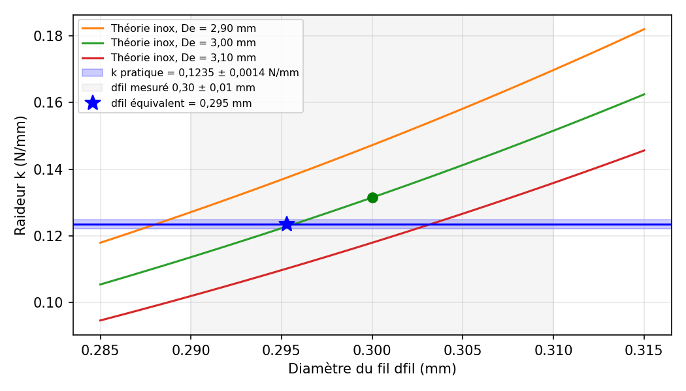
| Paramètre ajusté | Valeur mesurée | Valeur équivalente |
|---|---|---|
| Diamètre du fil d | 0,300 mm | 0,295 mm (−1,5 %) |
| Diamètre extérieur De | 3,00 mm | 3,06 mm (+1,9 %) |
| Nombre de spires actives n | 27 | 28,7 (+6 %) |
Un fil de 0,295 mm, soit 5 µm de moins que la valeur lue, suffit à expliquer l'écart. Autre piste : le nombre de spires actives d'un ressort de traction dépasse souvent légèrement le nombre de spires compté, car une partie des boucles travaille aussi. Cela va dans le bon sens.
d) Sensibilité de k à la géométrie. Raideur théorique (inox, n = 27, en N/mm) pour des variations de d et De :
| d \ De | 2,90 mm | 2,95 mm | 3,00 mm | 3,05 mm | 3,10 mm |
|---|---|---|---|---|---|
| 0,290 mm | 0,127 | 0,120 | 0,114 | 0,108 | 0,102 |
| 0,295 mm | 0,137 | 0,129 | 0,122 | 0,116 | 0,110 |
| 0,300 mm | 0,147 | 0,139 | 0,132 | 0,124 | 0,118 |
| 0,305 mm | 0,158 | 0,149 | 0,141 | 0,134 | 0,127 |
| 0,310 mm | 0,170 | 0,160 | 0,152 | 0,143 | 0,136 |
e) Incertitude sur la raideur théorique. En prenant le logarithme de la formule de raideur puis en différenciant, on obtient la propagation des incertitudes relatives (majoration par somme des valeurs absolues) :
ln k = ln G + 4·ln dfil − ln 8 − ln n − 3·ln D
Δk/k = ΔG/G + 4·Δdfil/dfil + Δn/n + 3·ΔD/D
Avec Δdfil = ±0,01 mm, ΔD ≈ ΔDe = ±0,02 mm, et en considérant G et n comme connus :
Δk/k = 4 × 0,01/0,30 + 3 × 0,02/2,70 = 13,3 % + 2,2 % ≈ 16 %
Le diamètre du fil contribue à lui seul pour plus de 85 % de l'incertitude. Au total, k_théorique = 0,1315 ± 0,020 N/mm (intervalle 0,111 à 0,152 N/mm).
Conclusion : la raideur pratique (0,1235 ± 0,0014 N/mm) se trouve dans l'intervalle théorique : la mesure et la géométrie sont compatibles. La mesure (±1,1 %) est plus de dix fois plus précise que le calcul à partir des cotes (±16 %). Seule une mesure du fil au micromètre rendrait le calcul théorique compétitif (±4 %).
2.5 Vérification de la contrainte dans le fil
La contrainte de cisaillement maximale dans le fil tient compte de la courbure de l'enroulement par le coefficient de Wahl, fonction de l'indice du ressort C :
C = D / dfil Kw = (4C − 1) / (4C − 4) + 0,615 / C
C = 2,70 / 0,30 = 9 Kw = 35/32 + 0,615/9 = 1,094 + 0,068 = 1,162
τ = 8 · F · D · Kw / (π · dfil³)
La contrainte dépend de la force réellement portée par le ressort, F_ressort = Fr0 + k·d. À d = 8 mm, F_ressort = 0,411 + 0,1235 × 8 = 1,40 N :
τ = 8 × 1,40 × 2,70 × 1,162 / (π × 0,30³) = 35,1 / 0,0848 ≈ 415 MPa
À 13 mm (200 g + 7 g, F_ressort = 2,03 N), τ ≈ 600 MPa. Pour un fil inox de 0,30 mm (résistance à la traction de l'ordre de 2 000 MPa, à confirmer), la contrainte admissible statique dans le corps est de l'ordre de 900 à 1 000 MPa. Le ressort reste dans son domaine élastique, y compris aux charges d'essai maximales. Les boucles d'accrochage restent le point le plus sollicité.

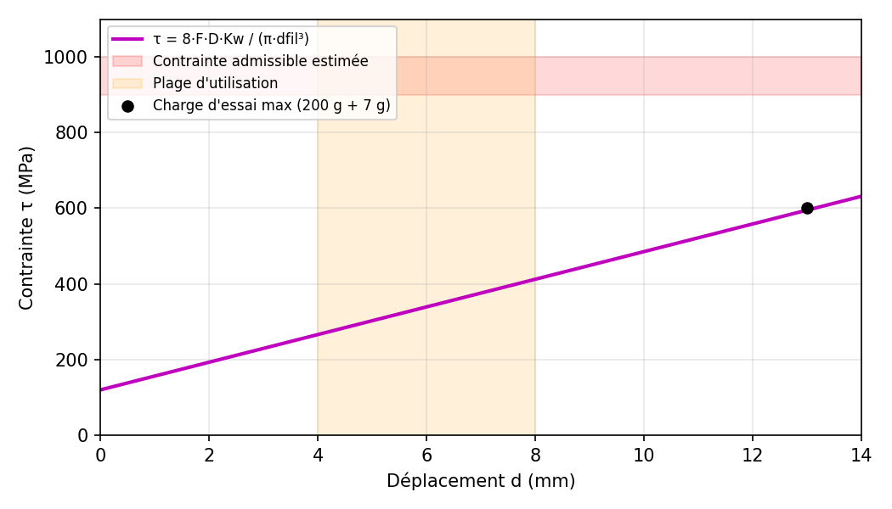
4. Points résolus et point ouvert
4.1 Résolu : spires, corps et diamètre du fil
Pour des spires jointives, la longueur du corps vaut le nombre de spires multiplié par le diamètre du fil :
dfil = Lcorps / n = 8,31 / 27 = 0,308 mm
Cette valeur confirme la mesure directe (0,30 mm) à 8 µm près. Le ressort compte bien 27 spires jointives de 0,30 mm, et la raideur théorique (0,1315 N/mm) correspond à la mesure à 6 % près. Les mesures antérieures du corps (10,63 mm pour 27 spires, 8,66 mm pour 22 spires, soit un pas de 0,394 mm) incluaient probablement le début des boucles et ont été écartées.
4.2 Point ouvert : précharge du ressort
Deux déterminations de la précharge du ressort au zéro devraient concorder :
- Par l'étalonnage (§1.6) : Fr0 = F0 + mp·g = 0,342 + 0,069 = 0,41 N (42 g). Borne sûre, indépendante de l'extrapolation : à 54 g, l'afficheur indiquait déjà 1,44 mm, donc Fr0 < (54 + 7) g = 0,60 N.
- Par la géométrie : Fr0 = Fi + k·(Lp − L0) ≥ 0,1235 × 6,32 = 0,78 N (80 g).
Les deux valeurs sont incompatibles : un ressort étiré de 6,32 mm ne peut pas céder sous moins de 61 g. Les hypothèses suivantes ont été examinées :
| Hypothèse | Évaluation | Conclusion |
|---|---|---|
| Poids de la partie mobile | Pesé : 7 g, déjà inclus dans Fr0 = 42 g | Insuffisant |
| Frottement châssis / partie mobile | Ff ≈ 0,3 g (hystérésis) ; de plus il augmenterait la force de décollage au lieu de la réduire | Écarté |
| Tension initiale Fi | Fi ≥ 0 augmente la précharge prédite, donc l'écart | Écarté |
| Nombre de spires / diamètre | Résolu (§4.1), raideur cohérente | Écarté |
| Étirement réel au zéro < 6,32 mm | Fr0 / k = 0,411 / 0,1235 = 3,33 mm, soit L0 équivalent = 18,0 mm | À vérifier |
| Ressort plus souple sur ses premiers mm | Boucles ou crochets qui s'ouvrent sous faible charge | À vérifier |

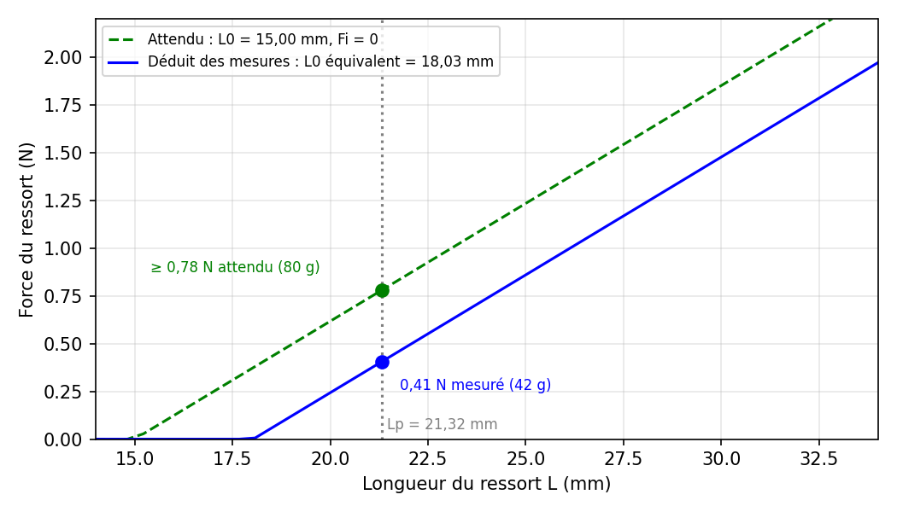

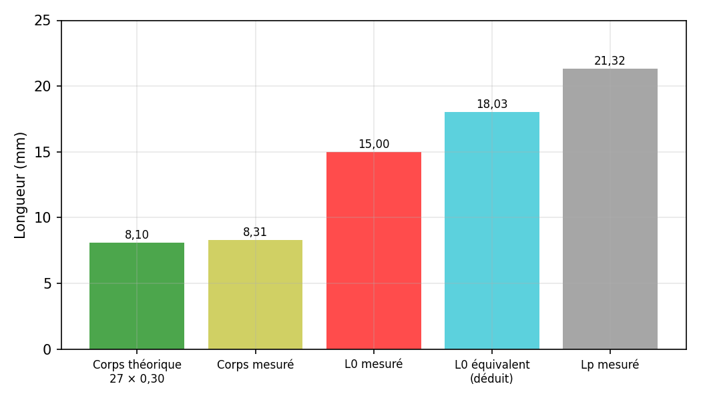
Tests proposés pour conclure. D'abord, mesurer directement la force de décollage : Belter tenu par le châssis, embout posé sur une balance, relever l'indication de la balance au moment où l'afficheur quitte 0 (résultat attendu ≈ 35 g). Ensuite, caractériser le ressort seul : le suspendre démonté, accrocher 40, 60 et 100 g, et mesurer sa longueur entre les mêmes points que L0 et Lp. Sous 42 g, il doit mesurer environ 18 mm si l'étirement réel au zéro est de 3,3 mm.
Portée. Ce point ouvert concerne uniquement la cohérence entre la géométrie et le modèle du ressort. Il n'affecte pas le modèle de mesure du §5, qui est établi par étalonnage direct.
5. Modèle de mesure de référence
Le modèle suivant est établi à partir des deux campagnes d'étalonnage (120 lectures) et sert de référence pour toutes les mesures ultérieures avec ce Belter.
5.1 Loi d'étalonnage
F = 0,337 + 0,1226 · A (F en N, A en mm affichés)
m = 34,4 + 12,49 · A (masse équivalente en g)
| Caractéristique | Valeur |
|---|---|
| Domaine de validité | A de 1 à 13 mm (masses de 54 à 200 g) |
| Seuil de décollage | F0 = 0,34 N (34 g) : en dessous, l'afficheur reste à 0 |
| Sensibilité | 0,1226 N par mm affiché (12,5 g/mm) |
| Précision (±2 écarts-types) | ±0,032 N (±3 g) |
| Linéarité | R² = 0,9986, aucune courbure dans les résidus |
| Hystérésis / frottement | 0,05 mm / 0,3 g : négligeables |
| Stabilité du zéro | Aucune dérive (x0 = 27,0 mm et A = 0 avant et après essais) |
| Orientation de référence | Vertical, embout vers le bas (sinon, voir §1.9) |
5.2 Paramètres du modèle physique
| Paramètre | Valeur | Origine |
|---|---|---|
| Raideur k | 0,1235 N/mm (±1,1 %) | Campagne 2, régression |
| Précharge du ressort Fr0 | 0,41 N (42 g) | F0 + mp·g |
| Masse de la partie mobile mp | 7 g | Pesée |
| Gain de l'afficheur | 1,005 (A = d) | Campagne 2 |
| Ressort | 27 spires jointives, dfil = 0,30 mm, De = 3,00 mm | Mesures |
| Matériau | Inox AISI 302 | G apparent 64 800 N/mm² |
| Contrainte max en service (d = 8 mm) | ≈ 415 MPa | Marge ≈ 2 sur l'admissible |
5.3 Utilisation
- Vérifier que l'afficheur indique 0 au repos, tige libre.
- Réaliser la mesure et lire la valeur affichée A (en mm).
- Calculer F = 0,337 + 0,1226·A, ou lire la table du §1.9. Corriger selon l'orientation si le Belter n'est pas vertical embout vers le bas (+0,069 N à l'horizontale).
- Une lecture inférieure à 1 mm est en dehors du domaine étalonné.
6. Application à la tension de courroie
6.1 Principe : appui en trois points
Monté dans son support, le Belter s'appuie sur le côté lisse de la courroie par deux points (têtes de vis), et la tige fixée au ressort vient appuyer au milieu du brin, côté denté. Un embout imprimé en 3D est enfilé sur la tige : sa face d'appui repose sur le sommet des dents, ce qui évite que la tige tombe tantôt sur une dent, tantôt dans un creux. La courroie tendue prend une flèche δ, et la tension T de ses deux brins équilibre la force F de la tige.

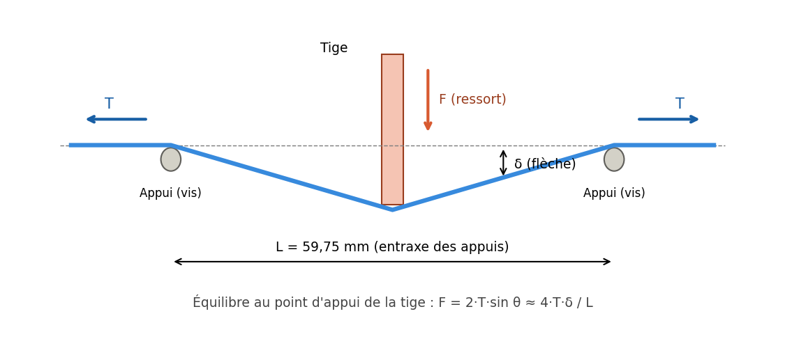
Au point d'appui de la tige, les deux brins inclinés d'un angle θ donnent une résultante qui équilibre F :
F = 2 · T · sin θ avec tan θ = 2δ / L
Pour une flèche petite devant l'écartement (δ ≪ L), sin θ ≈ 2δ / L, d'où :
T = F · L / (4 · δ)
6.2 Géométrie mesurée du support
Les appuis sont des têtes de vis rondes. On retient l'entraxe, moyenne des cotes intérieure (55,2 mm) et extérieure (64,3 mm) :
L = (55,2 + 64,3) / 2 = 59,75 mm diamètre des têtes = (64,3 − 55,2) / 2 = 4,55 mm
La lecture de référence est celle de l'afficheur quand l'embout est repoussé exactement jusqu'à la ligne des deux vis. Elle a été mesurée avec la pièce de calibration fournie par BigTreeTech, zéro fait tige au repos : 5,84 mm. Une première mesure avec une règle posée en pont sur les vis avait donné 5,94 mm ; la règle, moins plane et moins bien appuyée, surestimait la lecture de 0,10 mm.
Quand la courroie repousse la tige de A, le ressort s'allonge de A et la flèche de la courroie vaut :
δ = dmax − A avec dmax = 5,84 + e (e : épaisseur de la courroie)
Pour la courroie utilisée (GT2, largeur 9 mm, épaisseur e = 1,40 mm au pied à coulisse) :
dmax = 5,84 + 1,40 = 7,24 mm
6.3 Modèle de tension du Belter
La force de la tige est donnée par l'étalonnage (§5), Belter tenu à l'horizontale : F = 0,406 + 0,1226·A. En combinant :
T = (0,406 + 0,1226 · A) · 59,75 / (4 · (5,84 + e − A)) (T en N, A et e en mm)
Tous les paramètres de ce modèle sont mesurés : aucun n'est ajusté sur les essais de tension. Il a la même forme que la formule empirique fournie par BIQU, T = 23,51 / (dmax − A)^1,2283 ; l'exposant supérieur à 1 de cette formule s'explique par le ressort, dont la force croît quand la flèche diminue.
Sensibilité. Quand la flèche est petite (courroie très tendue), T varie fortement avec δ : une erreur de 0,1 mm sur dmax change T de 10 à 15 % pour δ ≈ 1 mm. C'est pourquoi la lecture de référence doit être prise sur une surface plane (pièce de calibration) et non avec une règle.
6.4 Validation expérimentale
Protocole : brin de courroie GT2 de 48 cm suspendu verticalement, masse connue accrochée en bas, de sorte que la tension vaut exactement T = m·g. Le Belter, tige horizontale et embout en place, est posé au milieu du brin. Zéro tige au repos avant chaque masse, 3 lectures par masse. Six masses ont été utilisées, de 648 g à 2916 g.
| Masse | T = m·g | Lectures A (mm) | A moyen | Modèle (dmax = 7,24) | Formule BIQU (dmax = 7,24) |
|---|---|---|---|---|---|
| 648 g | 6,36 N | 4,95 / 4,95 / 5,01 | 4,97 | 6,68 N (+5 %) | 8,59 N (+35 %) |
| 939 g | 9,21 N | 5,41 / 5,43 / 5,41 | 5,42 | 8,77 N (−5 %) | 11,24 N (+22 %) |
| 1790 g | 17,56 N | 6,18 / 6,19 / 6,20 | 6,19 | 16,57 N (−6 %) | 22,14 N (+26 %) |
| 2071 g | 20,32 N | 6,35 / 6,34 / 6,35 | 6,35 | 19,80 N (−3 %) | 27,00 N (+33 %) |
| 2585 g | 25,36 N | 6,54 / 6,51 / 6,53 | 6,53 | 25,26 N (0 %) | 35,60 N (+40 %) |
| 2916 g | 28,61 N | 6,64 / 6,61 / 6,65 | 6,63 | 30,02 N (+5 %) | 43,44 N (+52 %) |
Les lectures sont très répétables (écart maximal 0,06 mm entre trois lectures). Le modèle physique, construit uniquement à partir de grandeurs mesurées, reproduit les six tensions à ±6 % près. La formule BIQU, avec la même lecture de référence, surestime systématiquement la tension de cette courroie avec ce Belter, de +22 à +52 %.
Contrôle par ajustement. Avant la mesure à la pièce de calibration, dmax avait été ajusté sur les six points en minimisant les écarts relatifs :
min Σ [ ( (0,406 + 0,1226·Ai) · L / (4·(dmax − Ai)) − Ti ) / Ti ]² → dmax,eff = 7,24 mm
L'ajustement avait donc prédit, à partir des seuls essais de tension, une lecture de référence de 7,24 − 1,40 = 5,84 mm, confirmée ensuite par la pièce de calibration. En ajustant aussi l'écartement, on trouve L = 61,1 mm, à 2,3 % de la valeur mesurée. La géométrie et le modèle sont donc confirmés de façon indépendante.
Modèle de tension validé :
T = (0,406 + 0,1226 · A) · 59,75 / (4 · (7,24 − A)) (T en N, A en mm)
Écarts avec les mesures : +5 % à 648 g, −5 % à 939 g, −6 % à 1790 g, −3 % à 2071 g, 0 % à 2585 g, +5 % à 2916 g. La précision est donc de ±6 % entre 6 et 29 N. Une loi empirique de même forme que celle de BIQU, ajustée sur ces mêmes points, ne fait pas mieux (±6 %) : le modèle physique suffit.

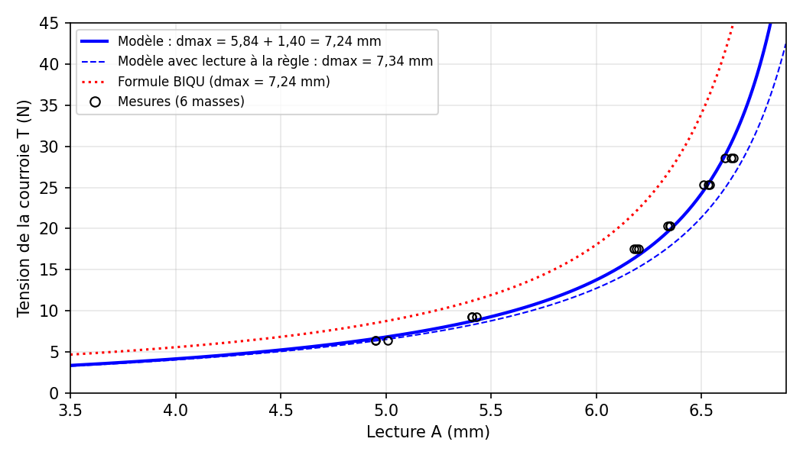
Table de conversion pour cette courroie (GT2 9 mm) :
| Lecture A | Tension T | Équivalent masse | Tension visée → lecture |
|---|---|---|---|
| 4,50 mm | 5,2 N | 0,53 kg | 5 N → 4,41 mm |
| 5,00 mm | 6,8 N | 0,69 kg | 10 N → 5,61 mm |
| 5,50 mm | 9,3 N | 0,95 kg | 15 N → 6,09 mm |
| 6,00 mm | 13,8 N | 1,40 kg | 20 N → 6,35 mm |
| 6,25 mm | 17,7 N | 1,80 kg | 25 N → 6,52 mm |
| 6,50 mm | 24,3 N | 2,48 kg | 30 N → 6,63 mm |
| 6,60 mm | 28,4 N | 2,89 kg |
Limites. Le modèle est validé de 6 à 29 N. Au-delà de A ≈ 6,5 mm, la flèche devient inférieure à 0,75 mm : une erreur de 0,01 mm sur la lecture fait alors varier T d'environ 1,5 à 2 %. Il faut donc faire plusieurs lectures pour les courroies très tendues.
7. Étapes restantes
Le Belter est étalonné en force, et le modèle de tension T = (0,406 + 0,1226·A)·59,75 / (4·(7,24 − A)) est validé sur une courroie GT2 9 mm entre 6 et 29 N, à ±6 % près. Un calculateur web reprend ce modèle. Il reste à accomplir :
- Vérifier la reproductibilité : refaire une série complète (6 masses) un autre jour, Belter reposé à chaque lecture, pour confirmer dmax,eff = 7,24 mm.
- Mesurer les longueurs libres des brins de la V-Core 4.1 IDEX dans la position de réglage Rat Rig (Y = 272 mm, mode COPY), pour relier la lecture du Belter à la fréquence visée (87 Hz CoreXY, 84 Hz hybride).
- Contrôler la masse linéique (0,0126 kg/m) en pesant au moins 1 m de courroie, ou en mesurant la fréquence du brin de 48 cm sous masse connue.
- Mesurer les courroies de l'imprimante avec le Belter tige horizontale, et comparer les brins gauche et droit (écart visé ≤ 5 %).
- Valider pour d'autres courroies (autre largeur ou autre marque) : mesurer l'épaisseur, puis refaire au moins deux points avec masses, car dmax,eff dépend de la courroie.
- Clore la question de la précharge (§4.2) : mesure de la force de décollage à la balance, et caractérisation du ressort seul suspendu (40, 60, 100 g).